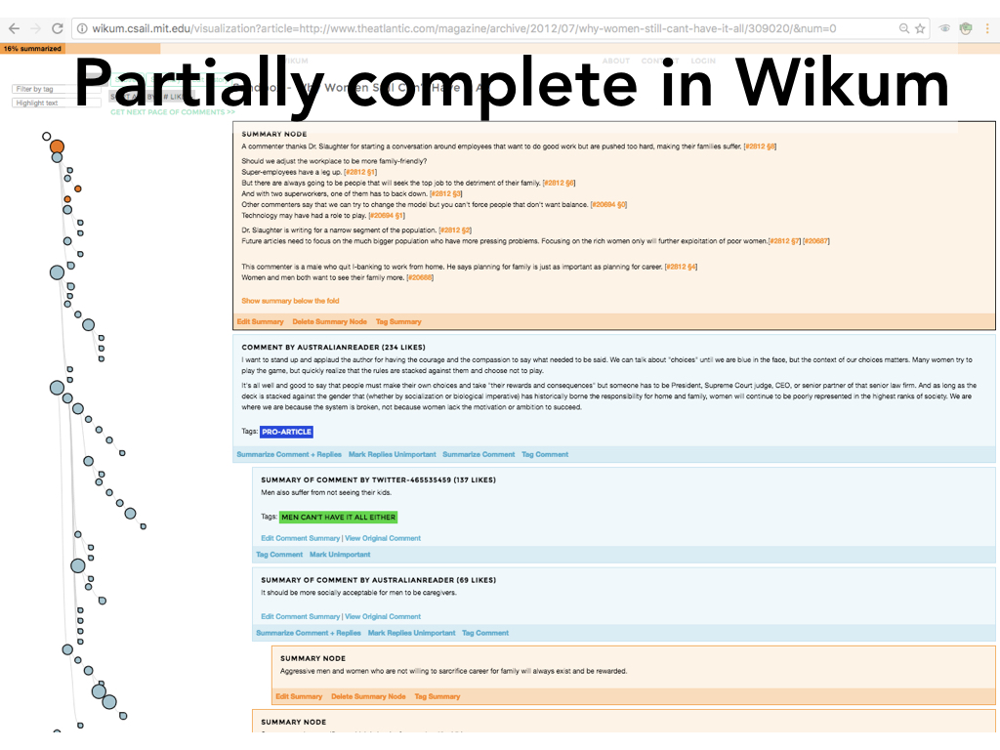

Wikum: Bridging Discussion Forums and Wikis Using Recursive Summarization
Authors
Amy X. Zhang, MIT CSAILLea Verou, MIT CSAIL
David Karger, MIT CSAIL
Abstract
Large-scale discussions between many participants abound on the internet today, on topics ranging from political arguments to group coordination. But as these discussions grow to tens of thousands of posts, they become ever more difficult for a reader to digest. In this article, we describe a workflow called recursive summarization, implemented in our Wikum prototype, that enables a large population of readers or editors to work in small doses to refine out the main points of the discussion. More than just a single summary, our work- flow produces a summary tree that enables a reader to explore distinct subtopics at multiple levels of detail based on their interests. We describe lab evaluations showing that (i) Wikum can be used more effectively than a control to quickly construct a summary tree and (ii) the summary tree is more effective than the original discussion in helping readers identify and explore the main topics.Here's a talk I gave on the project at a Wikimedia Research Showcase (skip to 32 minutes in):
Presentation
This talk was given at CSCW 2017 in Portland, OR.
The internet is awash with online discussion. And this is causing problems!
In many places, there is just so much discussion going on, that it's basically impossible for any sane person to read it all.
And actually quite a lot of it is redundant anyway, since it's so long that commenters don't even know if other people have written the same thing because they can't read it all.
So why do we even bother show all of it?
Another issue that gets exacerbated by size is the many complicated branches and back-and-forth tangents of conversation that emerge. You have to actually wade through the discussion to know if any conclusions or retractions have been made.
Also this kind of deep threading can be really hard to follow as you can see.
Nowadays you can do things like filtering or social moderation.
But these can have issues too, such as rich get richer, popular opinions getting upvoted, and minority viewpoints getting lost. And this still doesn't solve the issue of redundancy or how to deal with lots of back-and-forth deep threading.
At the end of the day, both of these solutions can only really get at a reshuffling of the comments or showing a subset of the comments, but there's no real aggregation or holistic understanding of the discussion as a whole.
So what about something like summarization?
So you might think ok, summarization of a large complicated discussion sounds hard. But Wikipedia has been really successful at condensing broad topics and lots of information about something into short wiki summaries. So could we use the same wiki strategy to summarize discussions?

Some discussion systems have done this. For example, the Quora Answer Wiki feature is a feature that adds a wiki summary to the top of the comments.
But there are a lot of problems with this approach.
As you can see, the wiki at the top and the forum below it are completely disconnected.
You can't tell if the summary is comprehensive, so you can't trust it. And if it's not comprehensive and you want to help make it comprehensive, you can't tell where to start summarizing. Also if you're reading the summary and you're interested to see the original comment it's referencing, you can't tell which one it is.
So on one side you've got this unwieldy sprawling discussion but with all these authentic voices and different perspectives, and on the other side, you have this clean short and neutral overview but with no personality or resonance. What we want to do is to bridge this gap, so that we can have the pros of both systems at once.
Wikum, which is a portmanteau of wiki and forum, is a tool to bridge this gap.
So how does Wikum actually work?
Ok. You start with a long discussion. Then, any person while reading through this can select a particular subthread to summarize. Maybe it's two people that have gone off on a tangent, and you summarize with - "This is a tangent about XYZ". Then that summary replaces that subthread in the view for all future visitors to the discussion, and people can click to toggle that summary to see the subthread behind it.
And we can keep doing this. That same person or someone else can select another small set of comments to summarize. Then someone can summarize a collection of summaries, and so on until there's just a summary of the whole discussion. We call this process recursive summarization.
The final artifact that remains is a summary tree, that can expand to reveal deeper summaries of smaller portions of the discussion, until you get to original comments.
The benefits of this are that it links summaries to the particular parts of the discussion they summarize so you know what they refer to. You can tell if the summary is comprehensive.
You can see whatever size summary of the discussion that you want.
For someone summarizing, it lets you immediately see what has been summarized versus not. And it lets you break up the summarization task into manageable, easy-to-define chunks.
Here is what the Wikum tool looks like. As you can see it's really easy to tell what has been summarized versus not - the dark orange circles are summaries of content while the blue is original comments.
You can directly manipulate the visualization to toggle open summaries, and drag to select subsets of summaries.
Wikum also supports features for exploring the discussion such as searching for terms to have them highlighted. Anyone can also tag a comment and then you can filter by tag.
Finally, you can sort the discussion by things like longest comment or most likes or other criteria.
When you do want to pick a subset of comments or even a single comment to summarize, an editing window comes up where you can do things like see important sentences highlighted which we implemented with an automatic summarization algorithm. You can also cite comments or paragraphs and insert quotations as well. We also set a limit on the length of the summary to 250 words.
So now to evaluation of the tool.
We performed two studies. In the first one, we wanted to evaluate the process of creating a summary using recursive summarization on Wikum and compare that against what would be used today.
In the second study, we wanted to evaluate the product of summarization, or the resulting summary tree, for readers of a discussion.
So for our first study, we decided to compare how a group of people summarize a large discussion using a tool like wikum versus using a tool like Google Docs, with track changes on, to mimic a wiki editing environment.
This is what the starting point in Wikum looks like for a large discussion.
And this is what the starting point in Google Docs looks like. We show threading the conventional way by tabbing up to four levels of depth.
All of the discussions were chosen to be long and deeply threaded, with around 40 minutes of reading time each.
And we wanted to evaluate our tool on different types of discussion from different mediums - so we picked a socially controversial one from the Atlantic comment sections,
a more deliberative discussion about what to do after a major event at a university from a mailing list,
and a more informational discussion about a scientific topic from Reddit.
We recruited participants and assigned them to one of the groups that did not yet have a finished summary. There were three groups initially. Each person inherited the work that the group had done so far and built on it. In the end there were 20 participants.
Each group was assigned one discussion in Wikum and a different discussion in Google Docs. Each person working on their own had to work for 20 minutes on summarizing one and then 20 minutes summarizing the other, with order counterbalanced.

So this is what a partially complete state in Wikum looked like. You can see some people started tagging comments, some subthreads have been completed summarized, while others have some lower level summaries completed.
Here is a partially complete state in Google Docs. With track changes on, you can see the different edits made by different people, and where people have deleted original discussion to show that they already summarized that part.
We plotted how much each user condensed the discussion, where 100% completion is a piece of text that is 250 words or shorter.
The solid lines are the Wikum summaries for the three groups while the dashed lines are the google doc summaries.
You can see, even within the same group, so the lines with the same color, wikum was faster in all three. In fact in the Google Doc summaries, it looks like the progress starts to slow and then stall after about two users.
So why did this happen? When observing the process, we saw that people in both Google Docs and Wikum were reluctant to edit each other's work. This was bad in Google Docs because people just continued to append their summaries to a ever growing summary at the start of the doc, which would get to like 2 or 3 pages long, hence the stalled progress. This issue was avoided in Wikum because users were instead overlaying summaries on top of existing ones, and not editing or destroying them.
After working on both we interviewed participants about the process.
Now onto study 2.
For each of the three discussions, and without looking at any of the summaries that had been created in study 1, we created a list of 12 points that had been raised by commenters. 6 of the points were taken from the discussion that we imported into Wikum or Google Docs. 6 other points were taken from the original discussion on the website but that we didn't import. So these were plausible points that could have been made but weren't.
We recruited 13 users, and each spent 10 minutes skimming a summary tree in Wikum, a summary in Google Docs, and as a control, an unsummarized discussion also in google docs.
All three discussions are different for each user and order was counterbalanced.
The summaries are the same ones that had been created in Study 1.

We saw that while most people explored the Google Doc linearly, going down the page until they ran out of time, in Wikum, users would have different strategies such as reading all the top level summaries first before expanding, or expanding everything first to pick deeper summaries to read.
Overall we saw that users remembered the points more accurately using Wikum. This was not a statistically significant result between Wikum and the Google Doc summary because of our low sample size. The two summary conditions were statistically significantly different from the control no summary condition though.
Asking users about the experience…
So now, what are ways that we can extend Wikum to different domains or additional use cases?

One thing we'd like to consider is more synchronous discussions such as chat. I'm sure many of you have experienced using something like slack, going away for a while and then coming back to a ton of messages that you have to wade through.
We're also interested in summarization of ongoing discussion as opposed to discussion that already concluded and what that would look like.
We're also interested in field deployments of Wikum in different settings to understand real world use cases, what the incentives could be to summarize, as well as issues that might come up, such as adversarial edits and biased summaries.
One area we're exploring is helping Wikipedia editors summarize long deliberative discussions in Wikipedia Talk pages, the kind that Jimbo might wade into on a discussion about a famous dress. This is currently a time-consuming process for Wikipedia admins.
We're also interested in how summarization can be a reflective and mediating step to inject into the process when having a contentious or deliberative discussion.
Finally, there are other interesting domains outside of discussion, such as scaffolding long form writing, where different sections are sort of summaries of larger sections, such as research articles. We're also interested in using WIkum towards writing things like Wikipedia articles or related work summaries. And finally, we're interested in summarization of other things such as group brainstorming activities.
Tool is available to use. You can import discussions, view existing completed summaries and partial summaries and play around at wikum.csail.mit.edu